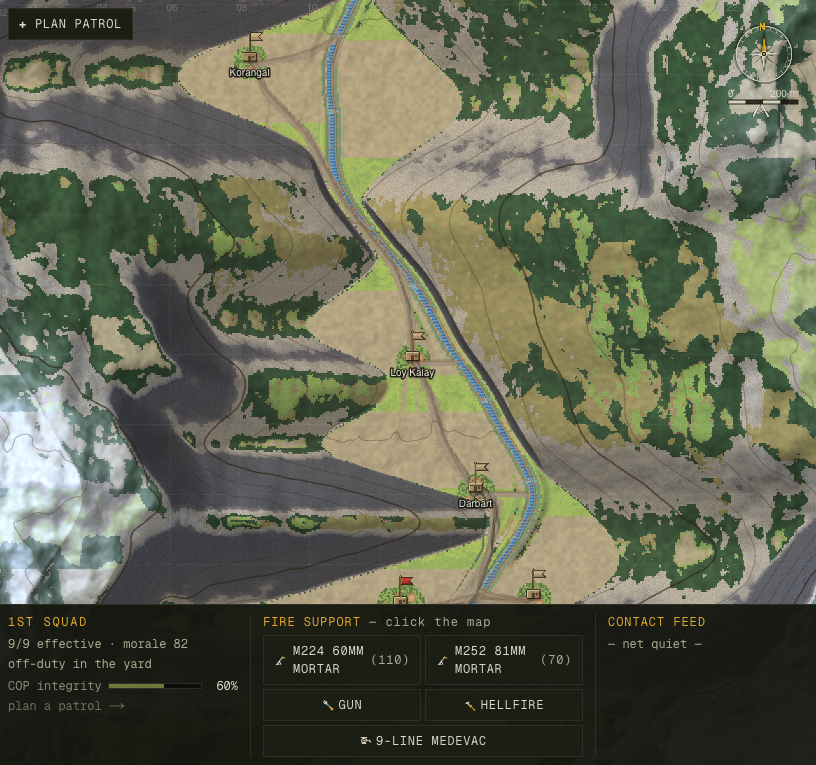
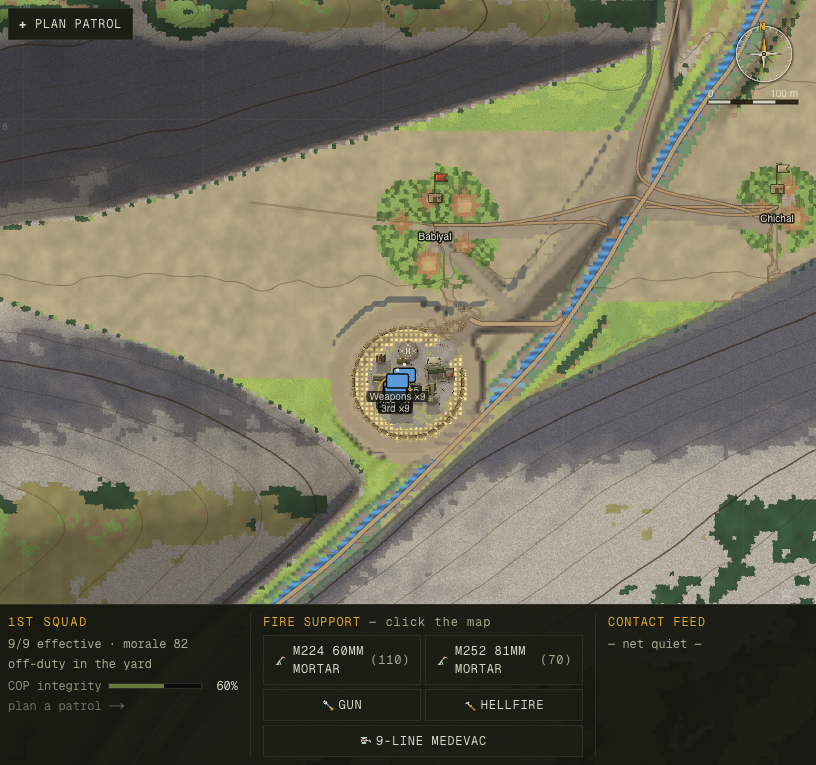
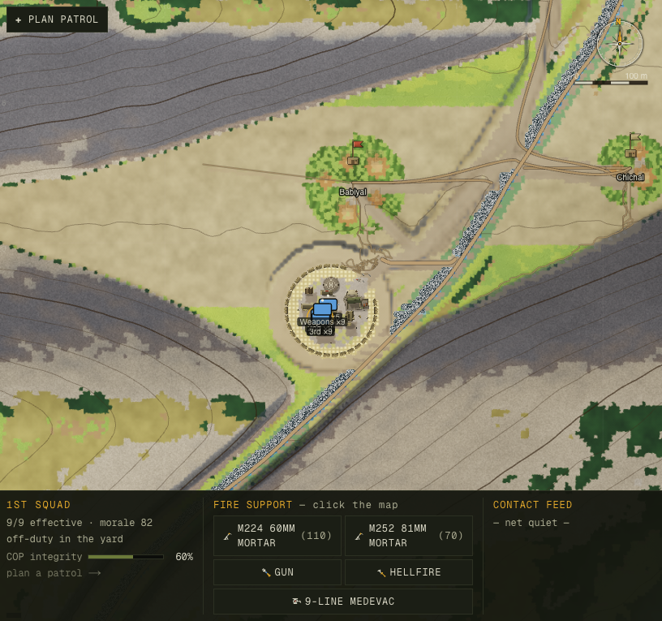
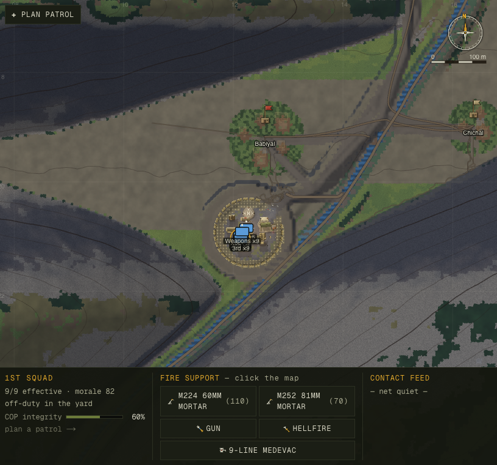
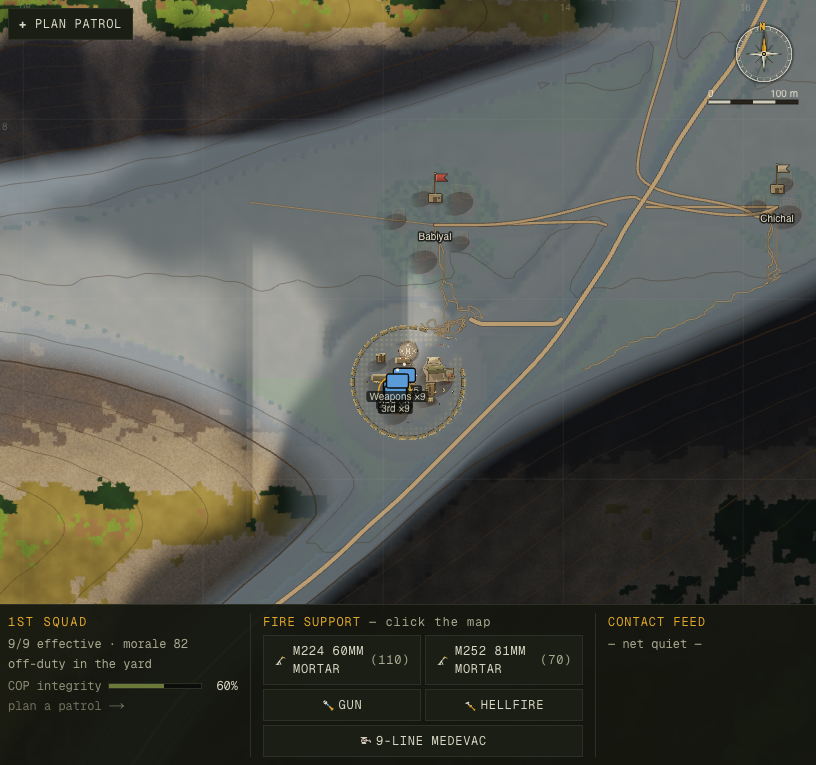
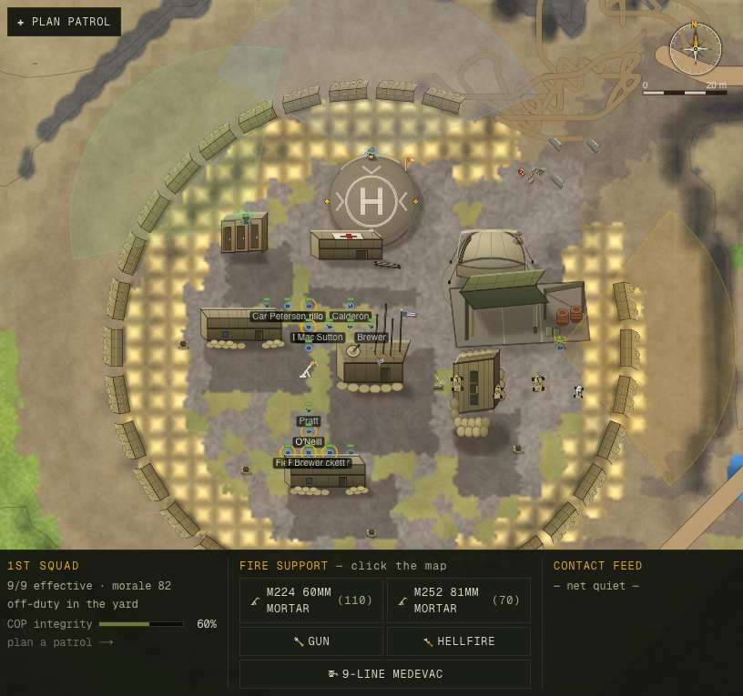
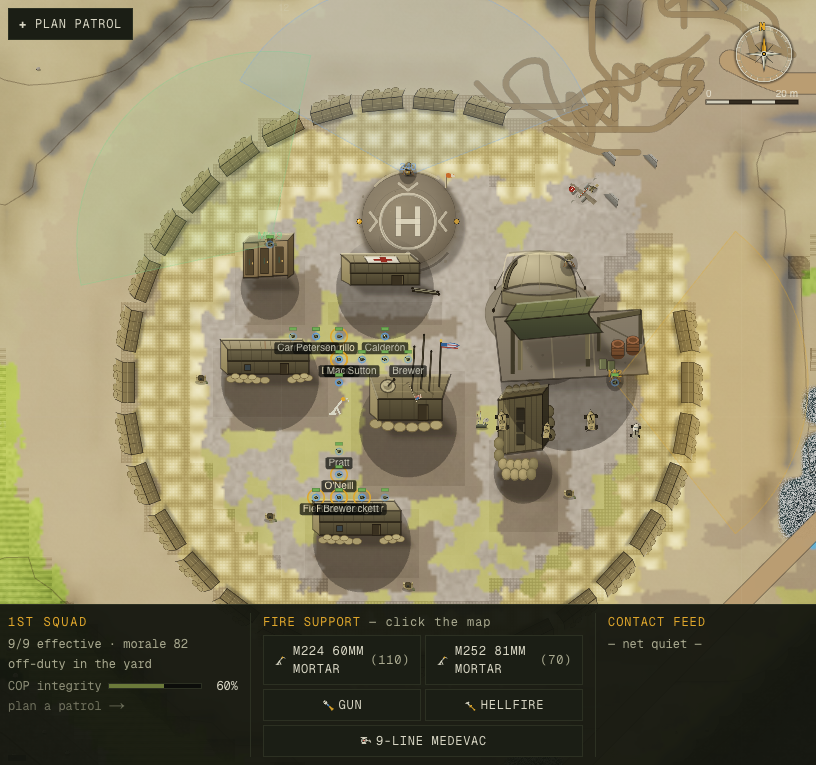
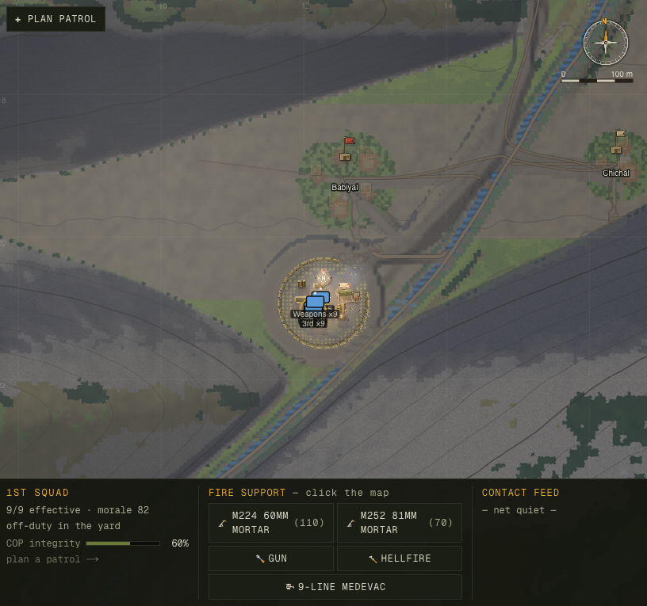
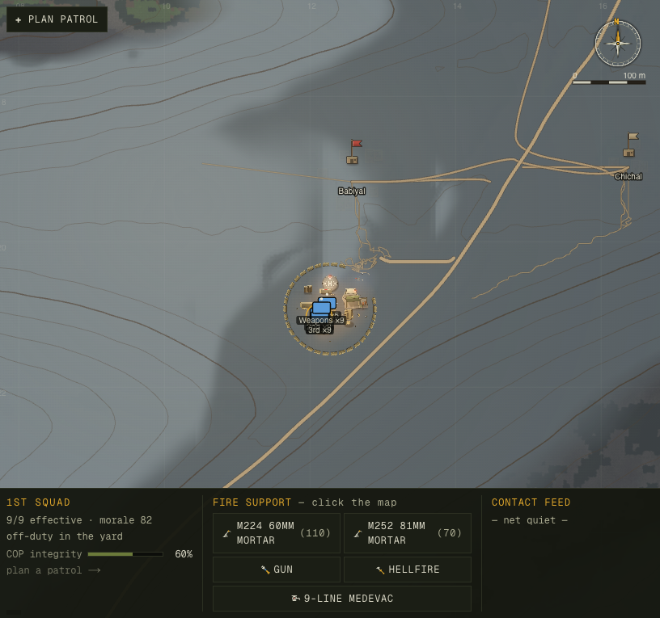

Before — flat tinted heightmap

visual-baseline, before = the pre-overhaul Canvas-2D build, after = this rebuild · 4-critic
adversarial verification + a fresh-eyes confirmation passA first attempt at this overhaul was reverted. It moved the existing flat painted relief onto the GPU byte-for-byte — "blit parity" — then laid a colour filter, a moving sun and cast shadows over the top. Technically clean; artistically timid. It was the same map with the sun switched on, and the owner sent it back: "do it again and 10× better."
This is the second attempt, and it inverts the idea that sank the first. The painted albedo bitmap is demoted from "the image" to one input of five: the fragment shader now recomposes the surface per-pixel from the simulation's own arrays — landcover class, slope, cover, the heightfield — against a procedural material library, lit in linear radiance by the live master-clock sun, grounded by baked ambient occlusion and ray-marched ridge shadows, with a real river, single-scatter aerial perspective, and an ACES film finish. The ground stops being a chart of the valley and becomes a photograph of it — while staying a legible tactical map at every zoom, which is the whole job.


The before is a single hill-shaded bitmap with a colour wash. The after has material identity per landcover — irrigated terraces quilting the floor, dusty ochre-and-scree slopes, cedar-dark draws — the drainage network reading as the darkest connected feature (correct for water from above), and ridge shadows giving the spurs and draws real relief. A skeptical eye reads it as drone/ISR imagery.


The river is now dark silt water — darker than its own gravel bars, the way a real Pech/Korengal channel reads — not the bright near-white ribbon a first pass produced (which a reviewer called out as "snow or a salt flat"). Road, terrace, talus and water sit at distinct luminances instead of collapsing into one olive band.


The sun is the master clock made visible. At first light the east ridge throws a multi-kilometre shadow across the valley floor (the most-documented Korengal morning image), and the lit west-facing slopes warm while the shadowed floor stays cool — the temperature separation a fixed NW bake can never have.


At close zoom the old bitmap smeared. The new ground carries per-material luminance tooth and micro detail-normals that the live sun rakes — gravel, dirt, scree resolve as surface. The COP structures and unit chits stay the crisp 2D overlay above it (the layer separation is deliberate and load-bearing).


Valley fog pools from a local-floor min-field up into the draws; the aerial-perspective veil is
keyed to the sacred visibilityM so it can never hide more than the weather declares. The orange
contours, labels and unit chits float cleanly above it — the atmosphere does weather, it doesn't hide the map.
The renderer is a WebGL2 terrain underlayer on its own opaque canvas, beneath a transparent Canvas-2D
canvas that still draws contours, units, fire-control and the HUD. That split is the legibility
firewall: the tactical symbology is physically a separate layer and is never graded, blurred or fogged. If
WebGL2 is unavailable the underlayer reports ok = false and the old 2D bake renders instead — the
headless test ecology keeps working.
Each frame is three passes:
| Pass | What happens |
|---|---|
| A — terrain → HDR | One fullscreen triangle. The fragment reads the heightmap (a bit-faithful port of Terrain.elevAt, so the 2D contours stay welded to the GL relief), recomposes the surface from a per-landcover material array (albedo tooth + micro detail-normals, slope-blended, two octaves), and lights it in linear radiance: sun·NdotL·castShadow·cloud + sky-hemisphere·AO + moon. Output is unclamped half-float (RGBA16F). |
| B — bloom | A half-res bright-pass (only true over-1.0 highlights) + a separable Gaussian. Sober: it catches the river glint, not the whole frame. |
| C — composite | HDR + bloom → ACES filmic tonemap → the time-of-day grade (exposure folds the weather light exactly once; white-balance, saturation, shadow-lift) → ordered Bayer dither (kills 8-bit sky banding) → sRGB, to the visible canvas. |
The single most important control is u_detailGain, ramped by zoom (ppm 1.0→3.0): every added
high-frequency effect — detail-normals, the material second octave, the rake — multiplies by it, so at strategic
zoom the surface collapses to the byte-faithful relief of the old map (verified: strategic mid-grey luma
moved 132.2 → 132.4, Δ+0.2) while close zoom resolves into ground. The band the old map got right is provably
preserved; the band it failed is transformed. Reused untouched from the verified prior groundwork: the solar
model (sky.ts, δ=+21° at Kunar's latitude — geometric sunrise 04:58 inside the gameplay light
ramp), the exponential-stride cast-shadow march (a 780 m ridge at low sun throws a multi-km shadow — the math
the timid attempt also got right), and the floor-field valley fog.
Nine commits, each one green (tsc / build / smoke / balance) and visibly better than the last, on the proven scaffold:
| # | Layer |
|---|---|
| C1 | Restore the WebGL skeleton; verify the HDR pipeline on headless SwiftShader (RGBA16F renderable, R8UI/RG8 uploads clean, usampler2D links) before writing a line of it |
| C2 | Linear-space lighting + RGBA16F HDR + ACES tonemap + dither — replaced the albedo·(0.34+0.95·shade) hillshade multiply |
| C3–C4 | The centerpiece — material-ID spine (landcover/slope/cover as GPU textures) + procedural per-landcover material array + detail-normal raking |
| C5 | Baked horizon ambient occlusion (contact darkening in draws, cliff bases, footprints) + softened PCF cast-shadow penumbra |
| C6 | Flow-advected specular river (dark silt, sober glint, clock-driven so it freezes on pause) |
| C7 | Single-scatter aerial perspective keyed to visibilityM + in-fog god-rays from the shadow map |
| C8 | Wet-ground darkening after rain + threshold bloom |
| C9 | Sun-tracked shadows grounding every structure and tree on the lit terrain |
The design itself was set by a fan-out of four independent proposers scored by four adversarial judges; the result was synthesized into a build contract (photoreal-drone surface recomposition as the spine, water and atmosphere grafted on). After the build, a second four-critic panel — art-director, legibility-skeptic, graphics-artifacts, anti-timidity — reviewed the full matrix against the baseline.
Numbers-first, partial stated as partial:
Standing checks at ship: tsc clean · next build compiled · smoke
OK (no-NaN + serialize round-trip + material-library hash) · balance green (12/12 firefights, 0
stranded) · sun-determinism probe identity maxErr 0.0. The render layer stays pure w.r.t. (clock, weather, seed):
clouds, fog, shadows and the river all advect on the sim clock and freeze on pause — only screen-space precip
runs on the wall clock.